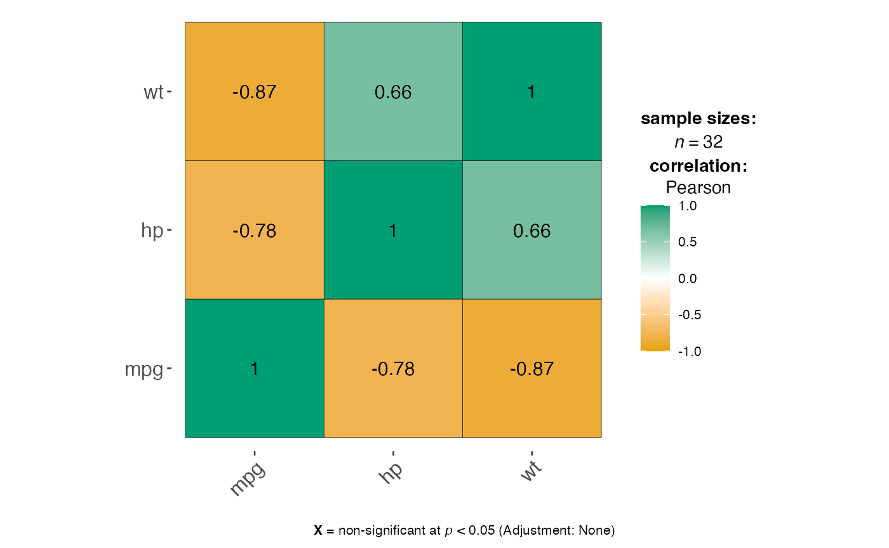

Correlations and Scatter Plots
Source:vignettes/correlations-scatterplots.Rmd
correlations-scatterplots.RmdThis vignette covers jjcorrmat() for creating
correlation matrices and jjscatterstats() for scatter
plots.
Correlation matrices with jjcorrmat()
jjcorrmat() visualises pairwise correlations between
numeric variables and reports the associated tests. Here we look at the
relationships between mpg, hp and
wt in the mtcars data.
jjcorrmat(data = mtcars, dep = c(mpg, hp, wt), grvar = NULL)
#>
#> CORRELATION MATRIX
#>
#> You have selected to use a correlation matrix to compare continuous
#> variables.
Scatter plots with jjscatterstats()
jjscatterstats() produces a scatter plot with a
regression line and textual output describing the correlation and
regression statistics.
jjscatterstats(data = mtcars, dep = mpg, group = hp, grvar = NULL)
#>
#> SCATTER PLOT
#>
#> You have selected to use a scatter plot.